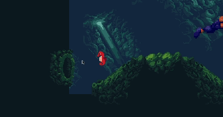
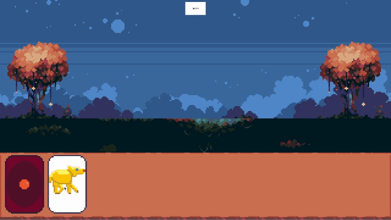

Back for another update after a period of inactivity. My beloved dog, Penelopy, passed away. So I took some time off to grieve. However, I'm going to keep going and continue developing games and producting music.
In Infinite Abyss I made it so you can travel between sections of the level by going through the tubes on the side of the walls. I won't show the code for that since it isn't very interesting; I did rework the movement for the player so the angle the mouse clicks is taken in to account to vary the speed of the player. It still isn't perfectly what I want but it is closer than it was. The code for that change is below.

-- player.script
-- some code ommited for brevity
local swim_speed = 200 -- Adjust the swim speed as needed
local swim_duration = 0.1 -- Adjust the swim duration in seconds
local deceleration_factor = 1 -- Adjust the deceleration factor as needed
local gravity = -50 -- Adjust the gravity as needed
-- Declare center_x and center_y in the global scope
local center_x, center_y
function init(self)
msg.post(".", "acquire_input_focus")
self.velocity = vmath.vector3()
self.facing = 0
-- Additional variables for swim behavior
self.is_swimming = false
self.swim_timer = 0
self.deceleration_factor = 0
self.correction = vmath.vector3() -- Initialize correction vector
-- Initialize center_x and center_y
local screen_width = (sys.get_config("display.width") / 2)
center_x = screen_width
center_y = sys.get_config("display.height") / 2
end
function fixed_update(self, dt)
-- Update swim timer
if self.is_swimming then
self.swim_timer = self.swim_timer - dt
end
if self.swim_timer <= 0 then
self.is_swimming = false
-- Smoothly decrease velocity using deceleration factor
self.velocity = self.velocity * (1 - deceleration_factor * dt)
end
-- Apply gravity
self.velocity.y = math.floor(self.velocity.y + gravity * dt)
-- Move the player based on swim input and acceleration
local dv = self.velocity * dt
local p = go.get_position()
go.set_position(p + dv)
-- reset correction
self.correction = vmath.vector3()
end
function on_input(self, action_id, action)
if action_id == hash("touch") then
if action.pressed then
-- Calculate the angle between touch position and center of the screen
local touch_angle = math.atan2(action.y - center_y, action.x - center_x)
-- Set the velocity based on touch angle
self.velocity.x = math.cos(touch_angle) * swim_speed
self.velocity.y = math.sin(touch_angle) * swim_speed
-- Flip the sprite horizontal based on touch
sprite.set_hflip("#sprite", action.x < center_x)
-- Start swimming
self.is_swimming = true
self.swim_timer = swim_duration
end
end
end
I also started working on another prototype I'm calling Discarded Whisker. It is a single player card game. Right now you can only draw, play a card, and end your turn.
I'm now taking Computer Science 406 at the University of Saskachewan which is another game development class. Since this is a great opportunity to learn I'll be focusing on that instead of these little side projects. I may post updates on my progress in that class here but I'm not sure yet. Depends on if we agree that is is okay to share the code publicly, and if I have time.
That is about all I have to share for now. I'm excited to be starting a new project and I'll be sure to post a link to it when there is something to show.